3. Einführung in die Sprache SQL
In diesem Abschnitt des Kapitels stellen wir die ersten SQL-Befehle zum Erstellen und Bearbeiten einer einzelnen Tabelle vor. Wir geben in der Regel eine vereinfachte Version dieser Befehle an. Die vollständige Syntax finden Sie in den Firebird-Referenzhandbüchern (siehe Abschnitt 2.2).
Eine Datenbank wird von Personen mit unterschiedlichen Kenntnissen genutzt:
- Der Datenbankadministrator ist in der Regel jemand, der sich mit SQL und Datenbanken gut auskennt. Er ist derjenige, der die Tabellen erstellt, da dieser Vorgang normalerweise nur einmal durchgeführt wird. Im Laufe der Zeit muss er möglicherweise die Struktur ändern. Eine Datenbank ist eine Sammlung von Tabellen, die durch Beziehungen miteinander verknüpft sind. Der Datenbankadministrator definiert diese Beziehungen. Er erteilt auch Berechtigungen an die verschiedenen Benutzer der Datenbank. Beispielsweise kann er festlegen, dass ein bestimmter Benutzer das Recht hat, den Inhalt einer Tabelle anzuzeigen, diese aber nicht zu ändern.
- Der Datenbankbenutzer ist die Person, die die Daten zum Leben erweckt. Je nach den vom Datenbankadministrator erteilten Berechtigungen fügt er Daten in den verschiedenen Tabellen der Datenbank hinzu, ändert sie und löscht sie. Er analysiert die Daten auch, um Informationen zu extrahieren, die für den reibungslosen Geschäftsbetrieb, die Verwaltung usw. nützlich sind.
In Abschnitt 2.6 haben wir den SQL-Editor des Tools [IB-Expert] vorgestellt. Dies ist das Tool, das wir verwenden werden. Lassen Sie uns einige Punkte noch einmal zusammenfassen:
- Der SQL-Editor kann über die Menüoption [Tools/SQL Editor] oder durch Drücken der Taste [F12] aufgerufen werden

Dadurch wird ein [SQL-Editor]-Fenster geöffnet, in das wir einen SQL-Befehl eingeben können:

Der obige Screenshot wird oft durch den folgenden Text dargestellt:
3.1. Firebird-Datentypen
Beim Erstellen einer Tabelle müssen Sie den Datentyp angeben, den eine Tabellenspalte enthalten kann. Hier stellen wir die gängigsten Firebird-Datentypen vor. Beachten Sie, dass diese Datentypen von DBMS zu DBMS variieren können.
Ganzzahl im Bereich [-32768, 32767]: 4 | |
Ganzzahl im Bereich [–2.147.483.648, 2.147.483.647]: -100 | |
Reelle Zahl mit n Stellen, von denen m Dezimalstellen sind NUMERIC(5,2): -100,23, +027,30 | |
Reelle Zahl, gerundet auf 7 signifikante Stellen: 10,4 | |
Reelle Zahl, auf 15 signifikante Stellen gerundet: -100,89 | |
Eine Zeichenfolge mit genau N Zeichen. Wenn die gespeicherte Zeichenfolge weniger als N Zeichen enthält, wird sie mit Leerzeichen aufgefüllt. CHAR(10): 'ANGERS ' (4 nachgestellte Leerzeichen) | |
Zeichenkette mit bis zu N Zeichen VARCHAR(10): 'ANGERS' | |
ein Datum: '2006-01-09' (Format JJJJ-MM-TT) | |
eine Uhrzeit: '16:43:00' (Format HH:MM:SS) | |
sowohl Datum als auch Uhrzeit: '2006-01-09 16:43:00' (Format JJJJ-MM-TT HH:MM:SS) |
Mit der Funktion CAST() können Sie bei Bedarf von einem Typ in einen anderen konvertieren. Um einen als Typ T1 deklarierten Wert V in den Typ T2 zu konvertieren, schreiben Sie: CAST(V,T2). Sie können die folgenden Typkonvertierungen durchführen:
- Zahl in Zeichenkette. Diese Typkonvertierung erfolgt implizit und erfordert keine Verwendung der CAST-Funktion. Daher erfordert die Operation 1 + '3' keine Konvertierung des Zeichens '3'. Das Ergebnis ist die Zahl 4.
- DATE, TIME, TIMESTAMP in Zeichenfolgen und umgekehrt. Somit
- TIMESTAMP in TIME oder DATE und umgekehrt
In einer Tabelle kann eine Zeile Spalten ohne Wert enthalten. Wir sagen, dass der Wert der Spalte die NULL-Konstante ist. Sie können das Vorhandensein dieses Werts mit den Operatoren überprüfen
IS NULL / IS NOT NULL
3.2. Erstellen einer Tabelle
Um zu lernen, wie man eine Tabelle erstellt, beginnen wir damit, eine im [Design]-Modus mit IBExpert zu erstellen. Dazu folgen wir der in Abschnitt 2.3 beschriebenen Vorgehensweise. Dadurch wird die folgende Tabelle erstellt:

Diese Tabelle dient dazu, die von einer Bibliothek erworbenen Bücher zu erfassen. Die Felder haben folgende Bedeutung:
Name | Typ | Einschränkung | Bedeutung |
Diese Tabelle, die mit dem IBEXPERT-Assistenten erstellt wurde, hätte auch direkt mit SQL-Anweisungen erstellt werden können. Um diese anzuzeigen, klicken Sie einfach auf die Registerkarte [DDL] der Tabelle:

Der zur Erstellung der Tabelle [BIBLIO] verwendete SQL-Code lautet wie folgt:
- Zeile 1: owner Firebird – gibt die verwendete SQL-Dialektstufe an
- Zeile 2: Firebird-spezifisch – gibt den verwendeten Zeichensatz an
- Zeilen 6–14: SQL-Standard: Erstellt die Tabelle BIBLIO, indem der Name und der Datentyp jeder ihrer Spalten definiert werden.
- Zeile 16: SQL-Standard: Erstellt eine Einschränkung, die festlegt, dass die Spalte TITLE keine Duplikate zulässt
- Zeile 17: SQL-Standard: Legt fest, dass die Spalte [ID] der Primärschlüssel der Tabelle ist. Das bedeutet, dass keine zwei Zeilen in der Tabelle dieselbe ID haben dürfen. Dies ähnelt der Einschränkung [UNIQUE NOT NULL] für die Spalte [TITLE], und tatsächlich hätte die Spalte TITLE als Primärschlüssel dienen können. Der aktuelle Trend geht dahin, Primärschlüssel zu verwenden, die keine spezifische Bedeutung haben und vom DBMS generiert werden.
Die Syntax für den Befehl [CREATE TABLE] lautet wie folgt:
CREATE TABLE Tabelle (Spaltenname1 Spaltentyp1 Spaltenbeschränkung1, Spaltenname2 Spaltentyp2 Spaltenbeschränkung2, ..., SpaltennameN SpaltentypN SpaltenbeschränkungN, weitere Beschränkungen) | |||||||||
Erstellt die Tabelle table mit den angegebenen Spalten
|
Die Tabelle [BIBLIO] hätte auch mit der folgenden SQL-Anweisung erstellt werden können:
Lassen Sie uns dies veranschaulichen. Öffnen wir diese Abfrage in einem SQL-Editor (F12), um eine Tabelle zu erstellen, die wir [BIBLIO2] nennen werden:
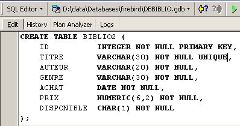
Nach der Ausführung müssen Sie die Transaktion festschreiben, um das Ergebnis in der Datenbank zu sehen:

Sobald dies geschehen ist, erscheint die Tabelle in der Datenbank:

Durch Doppelklicken auf den Namen können wir die Struktur anzeigen:

Wir sehen die Definition, die wir für die Tabelle [BIBLIO2] erstellt haben
3.3. Eine Tabelle löschen
Die SQL-Anweisung zum Löschen einer Tabelle lautet wie folgt:
DROP TABLE table | |
Löscht [Tabelle] |
Um die soeben erstellte Tabelle [BIBLIO2] zu löschen, führen wir nun den folgenden SQL-Befehl aus:

und bestätigen ihn mit [Commit]. Die Tabelle [BIBLIO2] wird gelöscht:

3.4. Eine Tabelle füllen
Fügen wir eine Zeile in die soeben erstellte Tabelle [BIBLIO] ein:

Bestätigen Sie das Hinzufügen der Zeile mit [Commit] und klicken Sie dann mit der rechten Maustaste auf die hinzugefügte Zeile:

und kopieren Sie, wie oben gezeigt, die eingefügte Zeile als INSERT-SQL-Anweisung in die Zwischenablage. Öffnen Sie anschließend einen beliebigen Texteditor und fügen Sie den soeben kopierten Text ein. Wir erhalten den folgenden SQL-Code:
INSERT INTO BIBLIO (ID,TITRE,AUTEUR,GENRE,ACHAT,PRIX,DISPONIBLE) VALUES (1,'Candide','Voltaire','Essai','18-OCT-1985',140,'o');
Die Syntax für eine SQL-INSERT-Anweisung lautet wie folgt:
insert into table [(Spalte1, Spalte2, ..)] values (Wert1, Wert2, ....) | |
fügt der Tabelle eine Zeile (Wert1, Wert2, ...) hinzu. Diese Werte werden den Spalten Spalte1, Spalte2, ... zugewiesen, sofern diese vorhanden sind; andernfalls werden sie den Spalten der Tabelle in der Reihenfolge ihrer Definition zugewiesen. |
Um neue Zeilen in die Tabelle [BIBLIO] einzufügen, geben wir die folgenden INSERT-Anweisungen in den SQL-Editor ein. Wir führen diese Anweisungen nacheinander aus und bestätigen sie. Mit der Schaltfläche [Neue Abfrage] gelangen wir zur nächsten INSERT-Anweisung.
Nach dem Commit [Commit] der verschiedenen SQL-Anweisungen erhalten wir die folgende Tabelle:
 |
3.5. Abfrage einer Tabelle
3.5.1. Einführung
Geben Sie im SQL-Editor den folgenden Befehl ein:
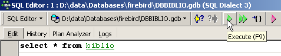
und führen Sie ihn aus. Wir erhalten das folgende Ergebnis:

Die SELECT-Anweisung dient zum Abrufen von Daten aus Datenbanktabellen. Diese Anweisung verfügt über eine sehr umfangreiche Syntax. Hier konzentrieren wir uns auf die Syntax für die Abfrage einer einzelnen Tabelle. Die gleichzeitige Abfrage mehrerer Tabellen behandeln wir zu einem späteren Zeitpunkt. Die Syntax für die SQL-Anweisung [SELECT] lautet wie folgt:
SELECT [ALL|DISTINCT] [*|Ausdruck1 alias1, Ausdruck2 alias2, ...] FROM Tabelle | |
zeigt die Werte von Ausdruck1 für alle Zeilen in der Tabelle an. Ausdruck1 kann eine Spalte oder ein komplexerer Ausdruck sein. Das Symbol * steht für alle Spalten. Standardmäßig werden alle Zeilen in der Tabelle (ALL) angezeigt. Wenn DISTINCT vorhanden ist, werden identische ausgewählte Zeilen nur einmal angezeigt. Die Werte von Ausdruck1 werden in einer Spalte mit dem Titel Ausdruck1 oder Alias1 angezeigt, falls letzterer verwendet wurde. |
Beispiele:


In den obigen Beispielen haben wir den angeforderten Spalten Aliasnamen (BOOK_TITLE, PURCHASE_PRICE) zugewiesen.
3.5.2. Anzeigen von Zeilen, die eine Bedingung erfüllen
SELECT .... WHERE Bedingung | |
Es werden nur Zeilen angezeigt, die die Bedingung erfüllen |
Beispiele
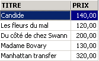

Eines der Bücher hat das Genre „Roman“ und nicht „Roman“. Wir verwenden die Funktion UPPER, die eine Zeichenfolge in Großbuchstaben umwandelt, um alle Romane zu erhalten.

Wir können Bedingungen mithilfe logischer Operatoren kombinieren
logisches UND | |
Logisches ODER | |
Logische Negation |
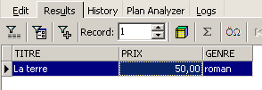
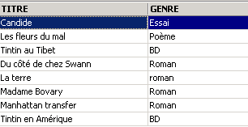


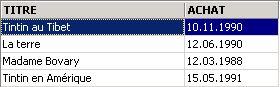 |
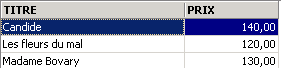
3.5.3. Anzeigen von Zeilen in einer bestimmten Reihenfolge
Zu den vorherigen Syntaxen können Sie eine ORDER BY-Klausel hinzufügen, um die gewünschte Anzeigereihenfolge festzulegen:
SELECT .... ORDER BY Ausdruck1 [asc|desc], Ausdruck2 [asc|desc], ... | |
Die Ergebniszeilen der Auswahl werden in der Reihenfolge von 1: aufsteigender (asc / ascending, dies ist die Standardeinstellung) oder absteigender (desc / descending) Reihenfolge von Ausdruck1 2: Wenn Ausdruck1 gleich ist, basiert die Anzeige auf den Werten von Ausdruck2 usw. |
Beispiele:


3.6. Zeilen aus einer Tabelle löschen
DELETE FROM Tabelle [WHERE Bedingung] | |
Löscht Tabellenzeilen, die die Bedingung erfüllen. Wenn keine Bedingung angegeben ist, werden alle Zeilen gelöscht. |
Beispiele:

Die beiden folgenden Befehle werden nacheinander ausgeführt:

3.7. Ändern des Inhalts einer Tabelle
update table set Spalte1 = Ausdruck1, Spalte2 = Ausdruck2, ... [where Bedingung] | |
Für Tabellenzeilen, die die Bedingung erfüllen (alle Zeilen, wenn keine Bedingung angegeben ist), wird Spalte1 auf den Wert von Ausdruck1 gesetzt. |
Beispiele:
Wir schreiben alle Genres groß:
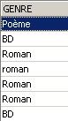
Wir überprüfen:

Zeige die Preise an:

Der Preis für Romane steigt um 5 %:
Überprüfen wir das:

3.8. Dauerhafte Aktualisierung einer Tabelle
Wenn Änderungen an einer Tabelle vorgenommen werden, wendet Firebird diese tatsächlich auf eine Kopie der Tabelle an. Diese Änderungen können dann mithilfe der Befehle COMMIT und ROLLBACK dauerhaft übernommen oder rückgängig gemacht werden.
COMMIT | |
Macht die seit dem letzten COMMIT an den Tabellen vorgenommenen Änderungen dauerhaft. |
ROLLBACK | |
Macht alle Änderungen rückgängig, die seit dem letzten COMMIT an den Tabellen vorgenommen wurden. |
Ein COMMIT wird zu folgenden Zeitpunkten implizit ausgeführt: a) Beim Abmelden von Firebird b) Nach jedem Befehl, der die Struktur von Tabellen verändert: CREATE, ALTER, DROP. |
Beispiele
Im SQL-Editor können Sie die Datenbank in einen bekannten Zustand zurücksetzen, indem Sie alle seit dem letzten COMMIT oder ROLLBACK durchgeführten Operationen festschreiben:
Wir rufen die Liste der Titel ab:

Einen Titel löschen:
Überprüfung:

Der Titel wurde erfolgreich gelöscht. Nun werden wir alle seit dem letzten COMMIT / ROLLBACK vorgenommenen Änderungen rückgängig machen:
Überprüfung:

Der gelöschte Titel ist wieder erschienen. Rufen wir nun die Preisliste ab:

Setzen wir alle Preise auf Null.
Überprüfen wir die Preise:

Lassen Sie uns die an der Datenbank vorgenommenen Änderungen rückgängig machen:
und überprüfen wir die Preise erneut:
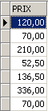
Wir haben die ursprünglichen Preise wiederhergestellt.
3.9. Zeilen aus einer Tabelle in eine andere einfügen
Es ist möglich, Zeilen aus einer Tabelle in eine andere hinzuzufügen, wenn deren Strukturen kompatibel sind. Um dies zu veranschaulichen, erstellen wir zunächst eine Tabelle [BIBLIO2] mit derselben Struktur wie [BIBLIO].
Doppelklicken Sie im IBExpert-Datenbank-Explorer auf die Tabelle [BIBLIO], um die Registerkarte [DDL] aufzurufen:

Auf dieser Registerkarte finden Sie die Liste der SQL-Anweisungen, die zur Erstellung der Tabelle [BIBLIO] verwendet wurden. Kopieren Sie den gesamten Code in die Zwischenablage (STRG-A, STRG-C). Öffnen Sie anschließend das Tool [Script Executive], mit dem Sie eine Liste von SQL-Anweisungen ausführen können:

Es öffnet sich ein Texteditor, in den wir den zuvor in die Zwischenablage kopierten Text einfügen können (STRG-V):

Eine Liste von SQL-Befehlen wird oft als SQL-Skript bezeichnet. Mit [Script Executive] können wir ein solches Skript ausführen, während der SQL-Editor nur die Ausführung eines einzelnen Befehls auf einmal zuließ. Das aktuelle SQL-Skript erstellt die Tabelle [BIBLIO]. Lassen wir es eine Tabelle mit dem Namen [BIBLIO2] erstellen. Dazu ändern Sie einfach [BIBLIO] in [BIBLIO2]:
Führen wir dieses Skript über die Schaltfläche [Skript ausführen] unten aus:

Das Skript wird ausgeführt:

und wir können die neue Tabelle im Datenbank-Explorer sehen:

Wenn wir auf [BIBLIO2] doppelklicken, um den Inhalt zu überprüfen, stellen wir fest, dass sie leer ist, was normal ist:

Eine Variante der SQL-Anweisung INSERT ermöglicht es Ihnen, Zeilen aus einer Tabelle in eine andere einzufügen:
INSERT INTO table1 [(column1, column2, ...)] SELECT Spalte1, Spalte2, ... FROM Tabelle2 WHERE Bedingung | |
Die Zeilen aus Tabelle2, die die Bedingung erfüllen, werden zu Tabelle1 hinzugefügt. Die Spalten Spalte1, Spalte2, ... aus Tabelle2 werden der Reihe nach den Spalten Spalte1, Spalte2, ... in Tabelle1 zugewiesen und müssen daher kompatible Typen aufweisen. |
Kehren wir zum SQL-Editor zurück:

und führen Sie die folgende SQL-Anweisung aus:
wodurch alle Zeilen aus [BIBLIO], die einem Roman entsprechen, in [BIBLIO2] eingefügt werden. Nachdem die SQL-Anweisung ausgeführt wurde, führen wir mit einem [Commit] eine Festschreibung durch:
Sehen wir uns nun die Daten in der Tabelle [BIBLIO2] an:

3.10. Eine Tabelle löschen
DROP TABLE table | |
löscht die Tabelle |
Beispiel: Löschen der Tabelle BIBLIO2
Bestätigen Sie die Änderung:
Aktualisieren Sie im Datenbank-Explorer die Tabellenansicht:

Wir sehen, dass die Tabelle [BIBLIO2] gelöscht wurde:

3.11. Ändern der Tabellenstruktur
ALTER TABLE Tabelle [ ADD Spaltenname1 Spaltentyp1 Spaltenbeschränkung1] [ALTER Spaltenname2 TYPE Spaltentyp2] [DROP Spaltenname3] [ADD Einschränkung] [DROP CONSTRAINT Einschränkungsname] | |
ermöglicht es Ihnen, Tabellenspalten hinzuzufügen (ADD), zu ändern (ALTER) und zu löschen (DROP). Die Syntax Spaltenname1 Spaltentyp1 Spaltenbeschränkung1 entspricht der von CREATE TABLE. Sie können auch Tabellenbeschränkungen hinzufügen oder löschen. |
Beispiel: Führen Sie die folgenden beiden SQL-Befehle nacheinander im SQL-Editor aus
Sehen wir uns im Datenbank-Explorer die Struktur der Tabelle [BIBLIO] an:

Die Änderungen wurden übernommen. Sehen wir uns an, wie sich der Inhalt der Tabelle verändert hat:
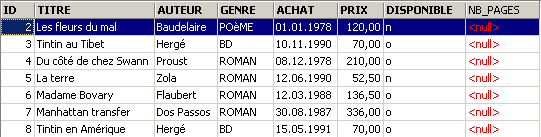
Die neue Spalte [NB_PAGES] wurde erstellt, enthält jedoch keine Werte. Löschen wir diese Spalte:
Sehen wir uns die neue Struktur der Tabelle [BIBLIO] an:

Die Spalte [NB_PAGES] ist tatsächlich verschwunden.
3.12. Ansichten
Es ist möglich, eine Teilansicht einer Tabelle oder mehrerer Tabellen zu erstellen. Eine Ansicht verhält sich wie eine Tabelle, enthält jedoch keine Daten. Ihre Daten werden aus anderen Tabellen oder Ansichten extrahiert. Eine Ansicht hat mehrere Vorteile:
- Ein Benutzer ist möglicherweise nur an bestimmten Spalten und Zeilen einer bestimmten Tabelle interessiert. Die Ansicht ermöglicht es ihm, nur diese Zeilen und Spalten zu sehen.
- Der Eigentümer einer Tabelle möchte möglicherweise anderen Benutzern nur eingeschränkten Zugriff gewähren. Eine Ansicht ermöglicht ihm dies. Die von ihm autorisierten Benutzer haben nur Zugriff auf die von ihm definierte Ansicht.
3.12.1. Erstellen einer Ansicht
CREATE VIEW view_name AS SELECT Spalte1, Spalte2, ... FROM Tabelle WHERE Bedingung [ WITH CHECK OPTION ] | |
erstellt die Ansicht „view_name“. Dabei handelt es sich um eine Tabelle mit der Struktur „Spalte1, Spalte2, …“ aus der Tabelle „table“ und, als Zeilen, den Zeilen aus der Tabelle „table“, die die Bedingung erfüllen (alle Zeilen, wenn keine Bedingung angegeben ist) | |
Diese optionale Klausel legt fest, dass Einfügungen und Aktualisierungen in der Ansicht keine Zeilen erzeugen dürfen, die die Ansicht nicht auswählen könnte. |
Hinweis Die Syntax von CREATE VIEW ist tatsächlich komplexer als oben dargestellt und ermöglicht insbesondere die Erstellung einer Ansicht aus mehreren Tabellen. Dazu muss die SELECT-Anweisung lediglich auf mehrere Tabellen verweisen (siehe das folgende Kapitel).
Beispiele
Wir erstellen eine Ansicht aus der Tabelle biblio, die nur Romane (Zeilenauswahl) und nur die Spalten Titel, Autor und Preis (Spaltenauswahl) enthält:
Aktualisieren Sie die Ansicht im Datenbank-Explorer (F5). Es erscheint eine Ansicht:
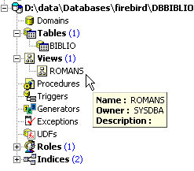
Wir können die mit der Ansicht verknüpfte SQL-Anweisung anzeigen. Doppelklicken Sie dazu auf die Ansicht [ROMANS]:

Eine Ansicht ist wie eine Tabelle. Sie hat eine Struktur:

und Inhalt:

Eine Ansicht wird wie eine Tabelle verwendet. Sie können SQL-Abfragen darauf ausführen. Hier sind einige Beispiele, die Sie im SQL-Editor ausprobieren können:
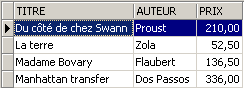
Ist der neue Roman in der Ansicht [ROMANS] sichtbar?
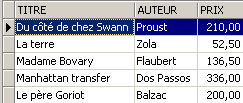
Fügen wir der Tabelle [BIBLIO] etwas anderes als einen Roman hinzu:
SQL> insert into biblio(id,titre,auteur,genre,achat,prix,disponible) values (11,'Poèmes saturniens','Verlaine','Poème','02-sep-92',200,'o');
Schauen wir uns die Tabelle [BIBLIO] an:
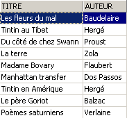
Sehen wir uns die Ansicht [ROMANS] an:

Das hinzugefügte Buch ist nicht in der Ansicht [ROMANS] enthalten, da es nicht die Bedingung upper(genre)='ROMAN' erfüllte.
3.12.2. Eine Ansicht aktualisieren
Sie können eine Ansicht genauso aktualisieren wie eine Tabelle. Alle Tabellen, aus denen die Daten der Ansicht extrahiert werden, sind von dieser Aktualisierung betroffen. Hier sind einige Beispiele:
SQL> insert into biblio(id,titre,auteur,genre,achat,prix,disponible) values (13,'Le Rouge et le Noir','Stendhal','Roman','03-oct-92',110,'o')

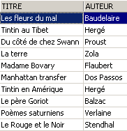
Wir löschen eine Zeile aus der Ansicht [ROMANS]:
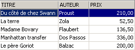
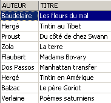
Die aus der Ansicht [NOVELS] gelöschte Zeile wurde auch aus der Tabelle [BIBLIO] gelöscht. Wir werden nun den Preis der Bücher in der Ansicht [NOVELS] erhöhen:
Schauen wir mal in [NOVELS] nach:

Welche Auswirkungen hatte dies auf die Tabelle [BIBLIO]?

Die Preise der Romane wurden tatsächlich auch in [BIBLIO] um 5 % erhöht.
3.12.3. Eine Ansicht löschen
DROP VIEW view_name | |
löscht die Ansicht mit dem Namen |
Beispiel
Im Datenbank-Explorer können Sie die Ansicht aktualisieren (F5), um zu sehen, dass die Ansicht [ROMANS] verschwunden ist:

3.13. Verwendung von Gruppenfunktionen
Es gibt Funktionen, die nicht auf jede einzelne Zeile einer Tabelle angewendet werden, sondern auf Gruppen von Zeilen. Dabei handelt es sich im Wesentlichen um statistische Funktionen, mit denen wir den Mittelwert, die Standardabweichung usw. der Daten in einer Spalte berechnen können.
SELECT f1, f2, .., fn FROM table [ WHERE Bedingung ] | |
Berechnet die statistischen Funktionen fi für alle Zeilen der Tabelle, die die Bedingung erfüllen. |
SELECT f1, f2, .., fn FROM table [ WHERE Bedingung ] [ GROUP BY Ausdruck1, Ausdruck2, ..] | |
Das Schlüsselwort GROUP BY unterteilt die Tabellenzeilen in Gruppen. Jede Gruppe enthält die Zeilen, für die die Ausdrücke expr1, expr2, ... denselben Wert haben. Beispiel: GROUP BY genre gruppiert Bücher desselben Genres. Die Klausel GROUP BY author,genre würde Bücher desselben Autors und desselben Genres zusammenfassen. Die WHERE-Bedingung entfernt zunächst Zeilen aus der Tabelle, die die Bedingung nicht erfüllen. Anschließend werden durch die GROUP BY-Klausel Gruppen gebildet. Die Aggregatfunktionen werden dann für jede Gruppe von Zeilen berechnet. |
SELECT f1, f2, .., fn FROM table [ WHERE Bedingung ] [ GROUP BY Ausdruck] [ HAVING group_condition] | |
Die HAVING-Klausel filtert die durch die GROUP BY-Klausel gebildeten Gruppen. Sie ist daher immer mit dem Vorhandensein der GROUP BY-Klausel verbunden. Beispiel: GROUP BY genre HAVING genre!='NOVEL' |
Die folgenden statistischen Funktionen stehen zur Verfügung:
Durchschnitt von Ausdruck | |
Anzahl der Zeilen, für die der Ausdruck einen Wert hat | |
Gesamtzahl der Zeilen in der Tabelle | |
Maximalwert des Ausdrucks | |
Minimum des Ausdrucks | |
Summe des Ausdrucks |
Beispiele
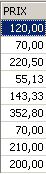
Durchschnittspreis? Höchstpreis? Niedrigster Preis?


Durchschnittspreis eines Romans? Höchstpreis?

Wie viele Comics?

Wie viele Romane kosten weniger als 100 F?


Anzahl der Bücher und Durchschnittspreis pro Buch für Bücher desselben Genres?
SQL> select upper(genre) GENRE,avg(prix) PRIX_MOYEN,count(*) NOMBRE from biblio group by upper(genre)
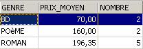
Dieselbe Frage, jedoch nur für Bücher, die keine Romane sind:
SQL>
select upper(genre) GENRE,avg(prix) PRIX_MOYEN,count(*) NOMBRE
from biblio
group by upper(genre)
having upper(GENRE)!='ROMAN'

Gleiche Abfrage, jedoch nur für Bücher unter 150 F:
SQL>
select upper(genre) GENRE,avg(prix) PRIX_MOYEN,count(*) NOMBRE
from biblio
where prix<150
group by upper(genre)
having upper(GENRE)!='ROMAN'

Gleiche Abfrage, aber wir behalten nur Gruppen mit einem durchschnittlichen Buchpreis >100 F
SQL>
select upper(genre) GENRE, avg(prix) PRIX_MOYEN,count(*) NOMBRE
from biblio
group by upper(genre)
having avg(prix)>100

3.14. Erstellen eines SQL-Skripts für eine Tabelle „ “
SQL ist eine Standardsprache, die mit vielen DBMS verwendet werden kann. Um von einem DBMS zu einem anderen wechseln zu können, ist es sinnvoll, eine Datenbank oder einfach bestimmte Elemente davon in Form eines SQL-Skripts zu exportieren, das bei erneuter Ausführung in einem anderen DBMS die im Skript exportierten Elemente wiederherstellen kann.
Hier exportieren wir die Tabelle [BIBLIO]. Wählen wir die Option [Metadaten extrahieren]:

Beachten Sie, dass Sie sich in der Datenbank befinden müssen, aus der Sie Elemente exportieren möchten. Die Option startet einen Assistenten:
 |
Wo soll das SQL-Skript erstellt werden:
| |
Dateiname, wenn die Option [Datei] ausgewählt ist | |
Was soll exportiert werden? | |
Schaltflächen zum Auswählen (->) oder Abwählen (<-) der zu exportierenden Objekte |
Wenn wir die gesamte Datenbank exportieren wollten, würden wir oben die Option [Extract All] aktivieren. Wir möchten jedoch lediglich die Tabelle BIBLIO exportieren. Dazu wählen wir mit [4] die Tabelle [BIBLIO] aus und geben mit [2] eine Datei an:

Wenn wir hier aufhören, wird nur die Struktur der Tabelle [BIBLIO] exportiert. Um deren Inhalt zu exportieren, müssen wir die Registerkarte [Datentabellen] verwenden:
 |
Wählen Sie mit [1] die Tabelle [BIBLIO] aus:
 |
Verwenden Sie [2], um das SQL-Skript zu generieren:
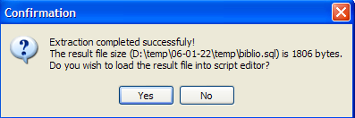
Nehmen wir die Eingabeaufforderung an. Dadurch können wir das generierte Skript in der Datei [biblio.sql] anzeigen:
- Die Zeilen 1 bis 3 sind Kommentare
- Die Zeilen 5 bis 12 sind Firebird-spezifisches SQL
- Die übrigen Zeilen sind Standard-SQL, das in einem DBMS ausgeführt werden sollte, das die in der Tabelle BIBLIO deklarierten Datentypen unterstützt.
Führen wir dieses Skript in Firebird aus, um eine Tabelle BIBLIO2 zu erstellen, die ein Klon der Tabelle BIBLIO ist. Verwenden Sie dazu [Skript ausführen] (Strg-F12):

Laden wir das soeben erstellte Skript [biblio.sql]:

Passen Sie es so an, dass nur die Teile zur Tabellenerstellung und zum Einfügen von Zeilen erhalten bleiben. Die Tabelle wird in [BIBLIO2] umbenannt:
CREATE TABLE BIBLIO2 (
ID INTEGER NOT NULL,
TITRE VARCHAR(30) NOT NULL,
AUTEUR VARCHAR(20) NOT NULL,
GENRE VARCHAR(30) NOT NULL,
ACHAT DATE NOT NULL,
PRIX NUMERIC(6,2) DEFAULT 10 NOT NULL,
DISPONIBLE CHAR(1) NOT NULL
);
INSERT INTO BIBLIO2 (ID, TITRE, AUTEUR, GENRE, ACHAT, PRIX, DISPONIBLE) VALUES (2, 'Les fleurs du mal', 'Baudelaire', 'POèME', '1978-01-01', 120, 'n');
...
COMMIT WORK;
Führen wir dieses Skript aus:
 |  |
Im Datenbank-Explorer können wir überprüfen, ob die Tabelle [BIBLIO2] erstellt wurde und ob sie die erwartete Struktur und den erwarteten Inhalt aufweist:
 |  |